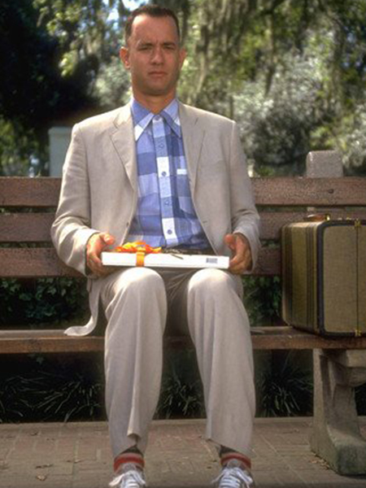

La Réplique
Apprenez en plus sur l’une des réplique de film les plus célèbre de l’histoire du cinéma.
Signification
Cette réplique incarne la philosophie de vie simple de Forrest Gump. Elle exprime l'idée optimiste que la vie est une aventure pleine de surprises, positives ou négatives, et qu'il faut l'apprécier et vivre au jour le jour. C'est un rappel de l'importance de vivre dans l'instant présent. De plus, elle nous conseille de rester ouvert aux opportunités imprévues. Forrest Gump choisit de vivre sans préjugés, ce qui lui permet de trouver de la beauté même dans les moments les plus difficiles.
Répétition
Cette réplique est une constante dans le film. Forrest la répète à plusieurs reprises, généralement quand il appréhende des moments significatifs de sa vie. Chaque fois qu'il dit ces mots, il les lie à des anecdotes marquantes ou à des leçons de vie qu'il a apprises. Cela renforce la notion que cette phrase est représentative de la vie de Forrest, un rappel continu de sa manière unique de percevoir le monde.
Métaphore
La métaphore de la vie en tant que boîte de chocolats est une comparaison puissante. Elle évoque l'idée que la vie est remplie d'expériences imprévisibles. Tout comme on ne peut pas deviner la saveur d'un chocolat avant de le goûter, on ne peut pas anticiper les événements futurs. Cela met en lumière la nature incertaine de la vie et encourage à aborder l'avenir avec ouverture et curiosité.
Retour à la vie civile (Années 1970)
Après la guerre, Forrest revient à la vie civile et retrouve Jenny, mais leurs chemins se séparent. Forrest découvre un talent pour le ping-pong et devient une star dans ce domaine et ira même jouer en Chine. Il utilise sa notoriété pour lancer une entreprise de crevettes pour son ami Bubba mort au combat.
Impact culturel
La réplique a transcendé le film pour devenir un symbole culturel. Elle est régulièrement citée en dehors du contexte du film, ce qui en fait une référence populaire. Elle symbolise la sagesse et la simplicité de Forrest Gump, rappelant à tous l'importance de vivre le moment présent et d'apprécier ce que la vie réserve. Elle inspire les gens à adopter une perspective positive face aux surprises de la vie.
Thème du film
Forrest retourne en Alabama après la mort de sa mère. Le film se termine avec Forrest élevant son fils, qui part à l'école.
L'Accueil du Public et de la Critique
“Forrest Gump” a connu un immense succès à la fois auprès du public et de la critique.
Accueil du Public
La réplique reflète le thème central du film, qui est l'idée que la vie est pleine de rebondissements. Forrest Gump lui-même est le parfait exemple de cette philosophie, car il fait face à des défis et des opportunités surprenantes tout au long de sa vie. Cette réplique capture l'esprit de l'histoire du film, à savoir qu'il est possible de trouver de la beauté même dans tous les moments de la vie tant elle est précieuse.